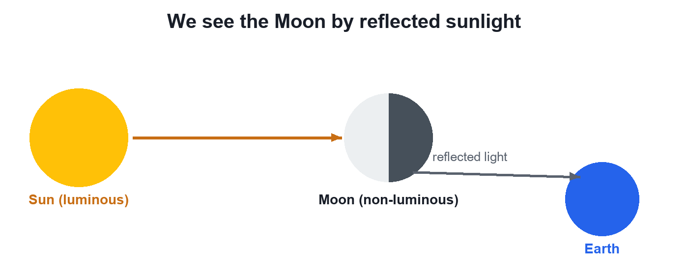

Chapter 9 · Physics
Reflection of Light
Video not playing? Watch on Instagram · YouTube
The Moon makes no light, yet it shines at night: sunlight bounces off it to our eyes. That bouncing back is reflection.
Download the short notesPDF, 93 KB · solved examples, practice set and answer key Up next in this chapter
 Laws of ReflectionTo hit a hidden target with a laser and a mirror you need 2 rules: i = r (both measured from the normal) and all three rays in one plane.Physics · simulation
Laws of ReflectionTo hit a hidden target with a laser and a mirror you need 2 rules: i = r (both measured from the normal) and all three rays in one plane.Physics · simulation
Key points
- Reflection: light falls on a surface and returns into the same medium.
- Luminous objects make light (Sun, bulb, candle); non-luminous ones (Moon, book, wall) are seen by reflected light.
- No light, no reflection: in a dark room even a white wall vanishes.
Why the Moon shines

Luminous and non-luminous
| Type | Examples |
|---|---|
| Luminous: make their own light | Sun, bulb, candle flame |
| Non-luminous: seen by reflected light | Moon, book, wall, your face |
Quick quiz
4 questions. Choose an answer for each, then submit to see your score and the explanations.
More from Light – Reflection and Refraction
 Light: Chapter IntroductionWe see things because light bounces off them into our eyes. At a surface light has 2 options: bounce back (reflection) or go in and bend (refraction).Physics
Light: Chapter IntroductionWe see things because light bounces off them into our eyes. At a surface light has 2 options: bounce back (reflection) or go in and bend (refraction).Physics Light Travels in Straight LinesYou can hear a friend round a corner but not see them: sound bends, light travels in straight lines. We draw its path as a ray.Physics
Light Travels in Straight LinesYou can hear a friend round a corner but not see them: sound bends, light travels in straight lines. We draw its path as a ray.Physics